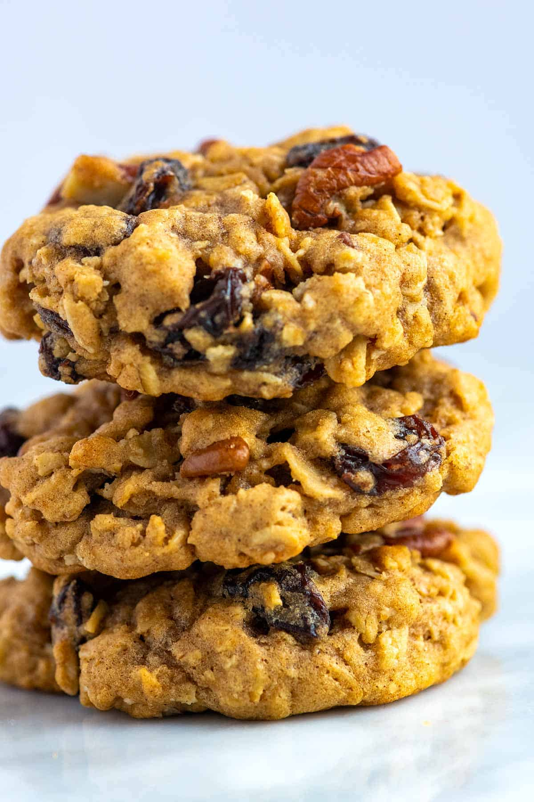

Oatmeal Cookies Recipe

Description
This is a simple Oatmeal Cookies recipe if you like eating grandma style sweet comforts!
Ingredients
- 1 1/4 cups rolled oats
- 3/4 cup all-purpose flour
- 1 teaspoon ground cinnamon
- 1/2 teaspoon baking powder
- 1/2 teaspoon salt
- 1 stick unsalted butter, softened
- 3/4 cup sugar
- 2 tablespoons molasses
- 1 large egg
- 1 teaspoon pure vanilla extract
- 1 cup raisins
Steps
- Combine the oats, flour, cinnamon, baking powder and salt in a large bowl.
- Beat the butter, sugar and molasses in a large bowl with a mixer on medium-high speed until fluffy, about 5 minutes.
- Beat in the egg and vanilla until smooth, about 2 more minutes.
- Reduce the mixer speed to low, add the flour mixture and beat until combined.
- Stir in the raisins by hand.
- For the best flavor and texture, cover the dough and chill at least 4 hours, or overnight.
- Position racks in the upper and lower thirds of the oven; preheat to 350 degrees F
- Line 2 baking sheets with parchment paper.
- Form the dough into 12 balls, about 2 tablespoonfuls each, and arrange 3 inches apart on the prepared baking sheets.
- Flatten with the back of a fork.
- Bake until the cookies are golden, 15 to 17 minutes.
- Let cool 5 minutes on the baking sheets, then transfer to racks to cool completely.